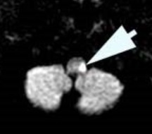

( of )
Correct: 0
Incorrect: 0
A patient with a left Horner syndrome together with ipsilateral ataxia and hypertropia is most likely to have a lesion in the
Incorrect
Incorrect
Incorrect
Correct!
A stroke in this territory, known as the “Wallenberg syndrome,” may also damage the inferior cerebellum. If the infarction is large, the cerebellum may swell enough to compress the medulla, creating a neurological emergency. The damaged cerebellum may have to be surgically excised. This is the most common brainstem stroke at any age, but especially in young adults. The underlying lesion may be idiopathic or traumatic dissection of the vertebral artery. By the way, can you guess whether the right eye or the left eye was the higher eye? Answer: the right eye. Use this rule: in skew deviation, the higher eye will always be on the side opposite to a medullary or caudal pontine lesion, whereas the higher eye will be on the same side as a rostral pontine or midbrain lesion.

The combination of ataxia, hypertropia (skew deviation), and Horner syndrome is strong evidence of a lesion in the dorsolateral medulla. In that region, infarction is the overwhelmingly likely cause, secondary to occlusion of the ipsilateral vertebral artery and its posterior inferior cerebellar artery branch.